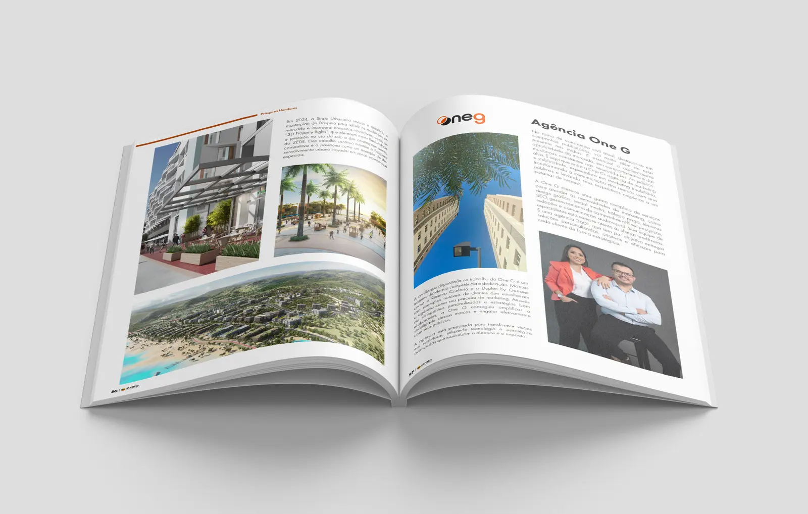
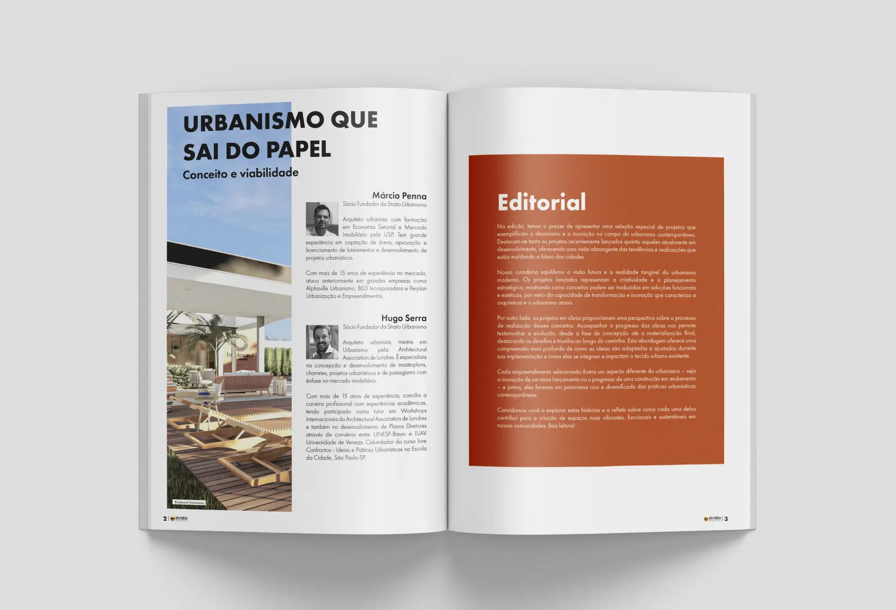
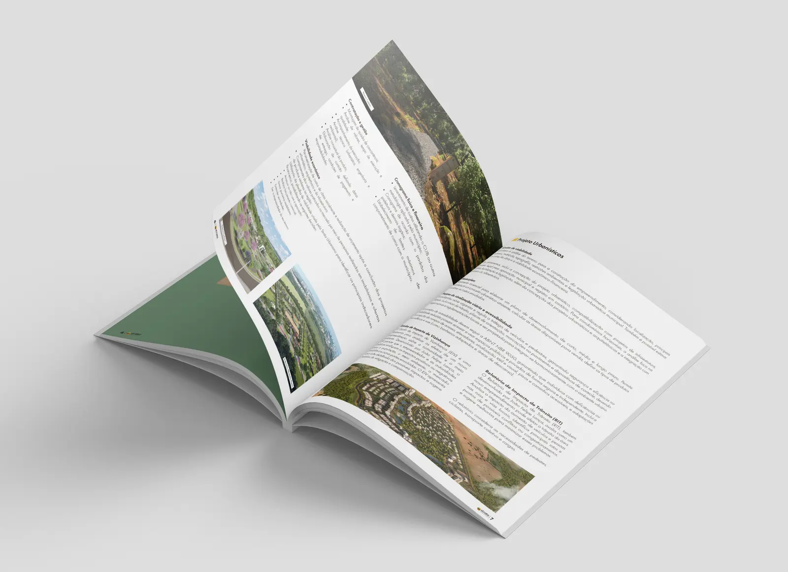
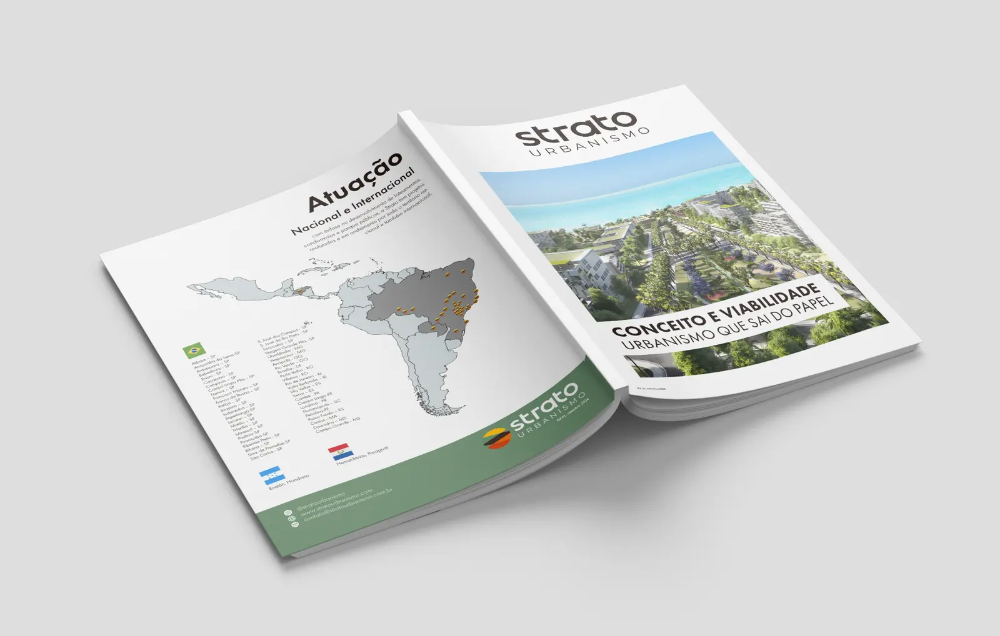

Editorial
Revista Strato

Distribuída no COMPLAN 2024, o Seminário de Comunidades Planejadas, Loteamentos e Desenvolvimento Urbano do Brasil, em Foz do Iguaçu, a revista da Strato Urbanismo reúne o que há de mais inspirador em urbanismo e arquitetura.
Com cases nacionais e internacionais, a publicação dá voz a empresas como Artesano Urbanismo, Arqos e FGMF Arquitetos, que compartilham uma visão de desenvolvimento urbano inovador e sustentável.
Mais do que um material de evento, a revista posiciona a Strato como uma marca que observa, seleciona e conecta as melhores referências do setor.




